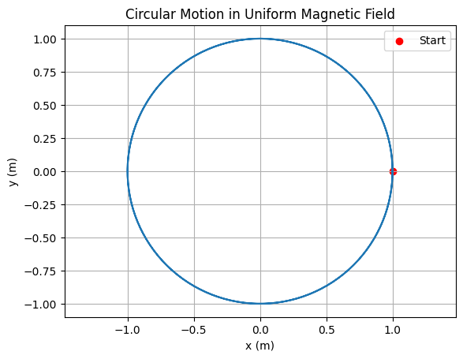
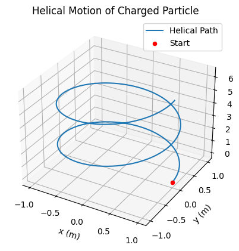
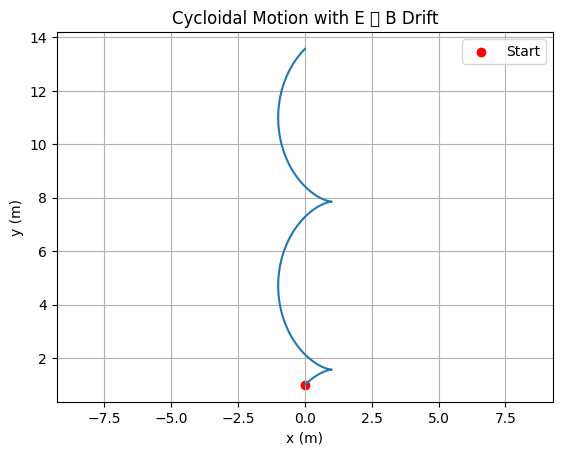
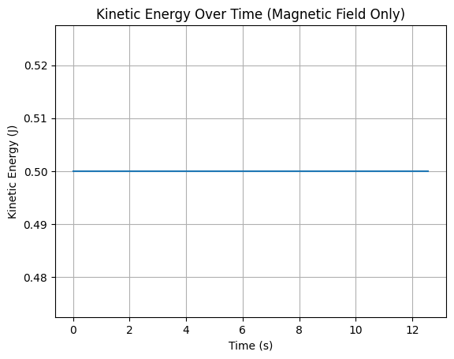

Problem 1
🔧 1. Conceptual Foundation
- Understand the Lorentz Force equation:
$$ \mathbf{F} = q\mathbf{E} + q\mathbf{v} \times \mathbf{B} $$
This fundamental equation describes the force \(\mathbf{F}\) experienced by a charged particle of charge \(q\) moving with velocity \(\mathbf{v}\) in the presence of an electric field \(\mathbf{E}\) and a magnetic field \(\mathbf{B}\). The total force is the sum of:
- The electric force: \(q\mathbf{E}\)
- The magnetic force: \(q\mathbf{v} \times \mathbf{B}\)
Note that the magnetic part depends on the direction of motion, making it inherently velocity-dependent and always perpendicular to the velocity vector and the magnetic field.
-
Break down the force into electric and magnetic components:
-
If only \(\mathbf{E}\) is present: $$ \mathbf{F} = q\mathbf{E} $$
The particle accelerates linearly in the direction of the electric field.
-
If only \(\mathbf{B}\) is present: $$ \mathbf{F} = q\mathbf{v} \times \mathbf{B} $$
The force is perpendicular to both \(\mathbf{v}\) and \(\mathbf{B}\), leading to circular or helical motion, depending on initial conditions.
-
Derive the equations of motion:
Starting from Newton's second law: $$ m\frac{d\mathbf{v}}{dt} = q\mathbf{E} + q\mathbf{v} \times \mathbf{B} $$
Rearranging: $$ \frac{d\mathbf{v}}{dt} = \frac{q}{m}\mathbf{E} + \frac{q}{m}(\mathbf{v} \times \mathbf{B}) $$
This is a vector differential equation governing the time evolution of the velocity of the particle. To obtain position, integrate velocity: $$ \frac{d\mathbf{r}}{dt} = \mathbf{v}(t) $$
Together, this system describes the full motion: $$ \begin{cases} \frac{d\mathbf{v}}{dt} = \frac{q}{m}(\mathbf{E} + \mathbf{v} \times \mathbf{B}) \ \frac{d\mathbf{r}}{dt} = \mathbf{v} \end{cases} $$
These equations typically require numerical methods for most non-trivial configurations of \(\mathbf{E}\) and \(\mathbf{B}\).
🌍 2. Application Contexts
- Research real-world systems where Lorentz force is critical:
The Lorentz force is a foundational principle in electromagnetism and underpins many advanced technologies. Below are key systems where this force governs charged particle behavior:
### 🔬 Particle Accelerators
Devices such as cyclotrons and synchrotrons use magnetic and electric fields to accelerate charged particles (like protons or electrons) to high speeds.
-
Magnetic fields bend the particle trajectories into circular paths: $$ r = \frac{mv}{qB} $$ where \(r\) is the radius of the circular path, \(m\) is the particle mass, \(v\) its speed, \(q\) the charge, and \(B\) the magnetic field strength.
-
Electric fields are applied in gaps to increase the particle’s energy during each revolution.
### ⚖️ Mass Spectrometers
These instruments separate ions based on their mass-to-charge ratio (\(m/q\)).
-
Ions enter a region with a known magnetic field, and the curvature of their path depends on: $$ \frac{mv^2}{r} = qvB \quad \Rightarrow \quad \frac{m}{q} = \frac{rB}{v} $$
-
By measuring \(r\), the radius of curvature, and knowing \(B\) and \(v\), one can deduce the mass of the ion.
### 🔒 Plasma Confinement (e.g., Tokamaks)
In fusion devices like tokamaks, strong magnetic fields are used to confine hot plasma.
- Charged particles spiral around magnetic field lines due to the Lorentz force: $$ \mathbf{F}_{\text{mag}} = q\mathbf{v} \times \mathbf{B} $$
- The goal is to trap the plasma long enough for fusion reactions to occur while minimizing particle losses.
### 🌌 Cosmic Ray Trajectories in Space
- Charged cosmic rays entering Earth’s magnetic field follow complex helical and drift paths.
- The Lorentz force affects their entry points and energy loss via spiraling motion: $$ \mathbf{F} = q\mathbf{v} \times \mathbf{B}_{\text{Earth}} $$
- This principle also explains why Earth's poles are more exposed to auroral activity.
### 📺 Cathode Ray Tubes (CRTs)
- In older televisions and oscilloscopes, electrons are accelerated and deflected using electric and magnetic fields.
- The image on the screen is formed by steering the electron beam via Lorentz force principles: $$ \mathbf{F} = q(\mathbf{E} + \mathbf{v} \times \mathbf{B}) $$
- Precise control of \(\mathbf{E}\) and \(\mathbf{B}\) determines beam position on the screen.
⚙️ 3. Simulating Particle Motion
To study how the Lorentz force affects particle motion, we simulate the trajectory of a charged particle under different field configurations. The goal is to numerically solve the equations of motion derived earlier:
These are typically solved using numerical methods, such as the Euler method or Runge-Kutta methods.
🧲 a. Uniform Magnetic Field Only
- Set \(\mathbf{E} = 0\) and \(\mathbf{B} = B\hat{\mathbf{z}}\).
- The force becomes: $$ \mathbf{F} = q\mathbf{v} \times \mathbf{B} $$
- If the initial velocity is perpendicular to \(\mathbf{B}\), the particle undergoes circular motion in the \(xy\)-plane.
- The Larmor radius is: $$ r_L = \frac{mv_\perp}{qB} $$
-
The cyclotron frequency (angular frequency of rotation) is: $$ \omega_c = \frac{qB}{m} $$
-
If the initial velocity has a component parallel to \(\mathbf{B}\), the result is helical motion along the field lines.
⚡ b. Uniform Electric and Magnetic Fields
- When both fields are present: $$ \mathbf{F} = q\mathbf{E} + q\mathbf{v} \times \mathbf{B} $$
- The solution depends on the relative orientation of \(\mathbf{E}\) and \(\mathbf{B}\).
Case: \(\mathbf{E} \parallel \mathbf{B}\)
- The electric field accelerates the particle linearly along the field direction.
- The magnetic field causes circular motion perpendicular to the field, resulting in spiral or helical motion with increasing radius.
Case: \(\mathbf{E} \perp \mathbf{B}\)
- A key result is the \(\mathbf{E} \times \mathbf{B}\) drift: $$ \mathbf{v}_d = \frac{\mathbf{E} \times \mathbf{B}}{B^2} $$
- The particle follows a cycloidal path superimposed on a net drift with velocity \(\mathbf{v}_d\).
- This drift is independent of particle charge and mass.
🔁 c. Numerical Implementation
To compute particle trajectories:
- Initialize: \(\mathbf{r}_0\), \(\mathbf{v}_0\), \(\mathbf{E}\), \(\mathbf{B}\), \(q\), \(m\).
- Select a time step \(\Delta t\).
- At each time step:
- Compute acceleration: $$ \mathbf{a} = \frac{q}{m}(\mathbf{E} + \mathbf{v} \times \mathbf{B}) $$
- Update velocity and position: $$ \mathbf{v}{n+1} = \mathbf{v}_n + \mathbf{a}_n \Delta t $$ $$ \mathbf{r}{n+1} = \mathbf{r}n + \mathbf{v}{n+1} \Delta t $$
- Repeat until desired simulation time is reached.
This simulation enables visualization of complex particle dynamics in electromagnetic environments.
🔢 4. Parameter Exploration
To deeply understand the behavior of charged particles under the Lorentz force, we perform a systematic exploration of key physical parameters. The aim is to investigate how variations in these values affect particle trajectories, energy, and derived quantities like the Larmor radius or drift velocity.
⚙️ Parameters to Explore
- Electric Field Strength (\(\mathbf{E}\))
- Magnetic Field Strength (\(\mathbf{B}\))
- Initial Velocity (\(\mathbf{v}_0\))
- Particle Charge and Mass (\(q\), \(m\))
These values are used in the core differential equation:
📊 Observing Trajectory Changes
By altering the above parameters, we can observe:
- Changes in orbital radius, curvature, or helicity of the path.
- Whether the motion remains bounded (circular/spiral) or becomes linear (acceleration).
- Emergence of drift motion in crossed fields.
- Resonance effects if time-varying fields are introduced (advanced case).
📏 Larmor Radius
The Larmor radius is sensitive to changes in \(v_\perp\), \(q\), \(B\), and \(m\):
- Increasing \(v_\perp\) or \(m\) increases the radius.
- Increasing \(q\) or \(B\) decreases the radius.
🌀 Drift Velocity (in crossed fields)
For \(\mathbf{E} \perp \mathbf{B}\):
- The drift velocity is independent of \(q\) and \(m\).
- Altering \(\mathbf{E}\) or \(\mathbf{B}\) modifies both magnitude and direction of \(\mathbf{v}_d\).
🧮 Energy Conservation Check
- In a pure magnetic field, the kinetic energy is conserved:
$$ \frac{1}{2}mv^2 = \text{constant} $$
This provides a benchmark to verify the accuracy of numerical simulations.
- In an electric field, the particle gains or loses energy:
$$ \frac{d}{dt}\left( \frac{1}{2}mv^2 \right) = q\mathbf{v} \cdot \mathbf{E} $$
💡 Why This Matters
- Understanding parameter sensitivity is crucial in real-world systems:
- Particle accelerators tune \(B\) fields to achieve desired trajectories.
- Plasma confinement depends on minimizing drift and instability.
- Mass spectrometers rely on accurate \(q/m\) resolution based on field settings.
🔁 Implementation Tip
Use sliders, input fields, or parameter sweep loops in code to:
- Automate simulations across different values.
- Collect data (e.g., trajectory coordinates, energy vs. time).
- Plot comparisons side by side.
This makes simulations not just illustrative, but also analytically powerful.
Perfect! To make Section 5: Visualization clearer and modular, below is a refactored version with multiple, well-separated Python code blocks, each handling a distinct type of particle motion and producing its own plot.
📊 5. Visualization
Here we present individual simulation cases and their corresponding plots. Each code block produces a separate, labeled figure to illustrate a specific physical behavior due to the Lorentz force.
🔵 1. Circular Motion in a Uniform Magnetic Field
A charged particle moving perpendicular to a uniform magnetic field \(\mathbf{B}\) undergoes circular motion.
import numpy as np
import matplotlib.pyplot as plt
# Constants
q = 1.0 # charge (C)
m = 1.0 # mass (kg)
B = 1.0 # magnetic field (T)
v0 = 1.0 # initial speed (m/s)
# Derived values
r_L = m * v0 / (q * B)
omega_c = q * B / m
# Time array
t = np.linspace(0, 2 * np.pi / omega_c * 2, 500)
# Circular trajectory
x = r_L * np.cos(omega_c * t)
y = r_L * np.sin(omega_c * t)
# Plot
plt.figure()
plt.plot(x, y)
plt.scatter(x[0], y[0], color='red', label='Start')
plt.title("Circular Motion in Uniform Magnetic Field")
plt.xlabel("x (m)")
plt.ylabel("y (m)")
plt.axis("equal")
plt.grid(True)
plt.legend()
plt.show()

🧵 2. Helical Motion (Parallel and Perpendicular Velocity)
When the initial velocity has both perpendicular and parallel components to \(\mathbf{B}\), the motion becomes helical.
from mpl_toolkits.mplot3d import Axes3D
# Reuse circular components
v_parallel = 0.5 # m/s along z-axis
z = v_parallel * t
# Plot 3D helical motion
fig = plt.figure()
ax = fig.add_subplot(111, projection='3d')
ax.plot(x, y, z, label='Helical Path')
ax.scatter(x[0], y[0], z[0], color='red', label='Start')
ax.set_title("Helical Motion of Charged Particle")
ax.set_xlabel("x (m)")
ax.set_ylabel("y (m)")
ax.set_zlabel("z (m)")
ax.legend()
plt.show()

⚡ 3. \(\mathbf{E} \perp \mathbf{B}\) Drift (Cycloidal Motion)
When \(\mathbf{E}\) is perpendicular to \(\mathbf{B}\), the particle drifts with velocity:
This causes a cycloidal trajectory.
# Drift parameters
E = 1.0 # electric field (V/m)
v_d = E / B
# Cycloidal motion
x_drift = r_L * np.sin(omega_c * t)
y_drift = r_L * np.cos(omega_c * t) + v_d * t
# Plot
plt.figure()
plt.plot(x_drift, y_drift)
plt.title("Cycloidal Motion with E ⟂ B Drift")
plt.xlabel("x (m)")
plt.ylabel("y (m)")
plt.scatter(x_drift[0], y_drift[0], color='red', label='Start')
plt.grid(True)
plt.axis("equal")
plt.legend()
plt.show()

🔋 4. Energy Check in Magnetic Field
Since magnetic fields do no work, the kinetic energy should remain constant.
# Compute speed over time
speed = np.sqrt((omega_c * r_L * np.sin(omega_c * t))**2 +
(omega_c * r_L * np.cos(omega_c * t))**2)
KE = 0.5 * m * speed**2
# Plot energy
plt.figure()
plt.plot(t, KE)
plt.title("Kinetic Energy Over Time (Magnetic Field Only)")
plt.xlabel("Time (s)")
plt.ylabel("Kinetic Energy (J)")
plt.grid(True)
plt.show()

✅ Summary
- Each case isolates a core physical scenario for clarity.
- All plots are independent and help verify both motion and physical conservation laws.
- You can extend each code block to include annotations, drift vectors, or overlay multiple particles.